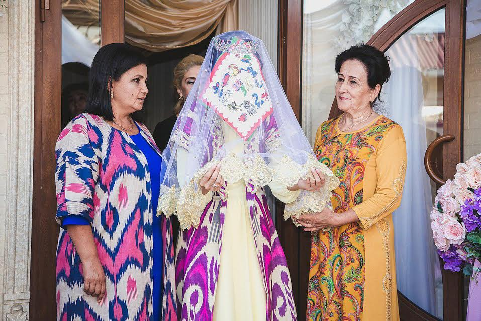
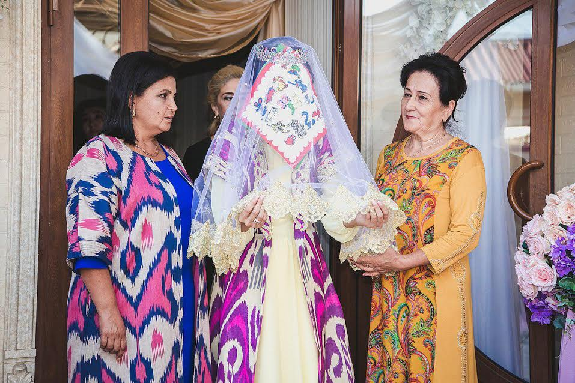

General
Uzbekistan has a wide mix of ethnic groups and cultures, with the Uzbek being the majority group. In 1995 about 71% of Uzbekistan's population was Uzbek. The chief minority groups were Russians (8%), Tajiks (5–30%), Kazakhs (4%), Tatars (2.5%) and Karakalpaks (2%). It is said, however, that the number of non-Uzbek people living in Uzbekistan is decreasing as Russians and other minority groups slowly leave and Uzbeks return from other parts of the former Soviet Union.
When Uzbekistan gained independence in 1991, there was concern that Muslim fundamentalism would spread across the region. The expectation was that a country long denied freedom of religious practice would undergo a very rapid increase in the expression of its dominant faith. As of 1994, over half of Uzbekistan's population was said to be Muslim, though in an official survey few of that number had any real knowledge of the religion or knew how to practice it. However, Islamic observance is increasing in the region.
The main contribution to the development was made by ancient Iranians, nomad Turkic tribes, Arabs, Chinese, Russians. Traditions of multinational Uzbekistan reflected in the music, dances, fine art, applied arts, language, cuisine and clothing. Population of the republic, especially rural population revere traditions deeply rooted in the history of the country.
The Great Silk Road played a great role in the development of Uzbekistan culture. Being the trade route, it ran from China to two destinations: first one was to Ferghana Valley and Kazakh steppes and second route led to Bactria, and then to Parthia, India and Middle East up to Mediterranean Sea. The Silk Road favored to exchange not only goods, but also technologies, languages, ideas, religions. Thereby the Great Silk Road led to the spread of Buddhism on the territory of Central Asia, where you still may find traces of Buddhist culture: Adjina-tepe in Tadjikistan, Buddhist temple in Kuva, Ferghana valley, Fayaz-Tepa near Termez in Uzbekistan and etc.
 
